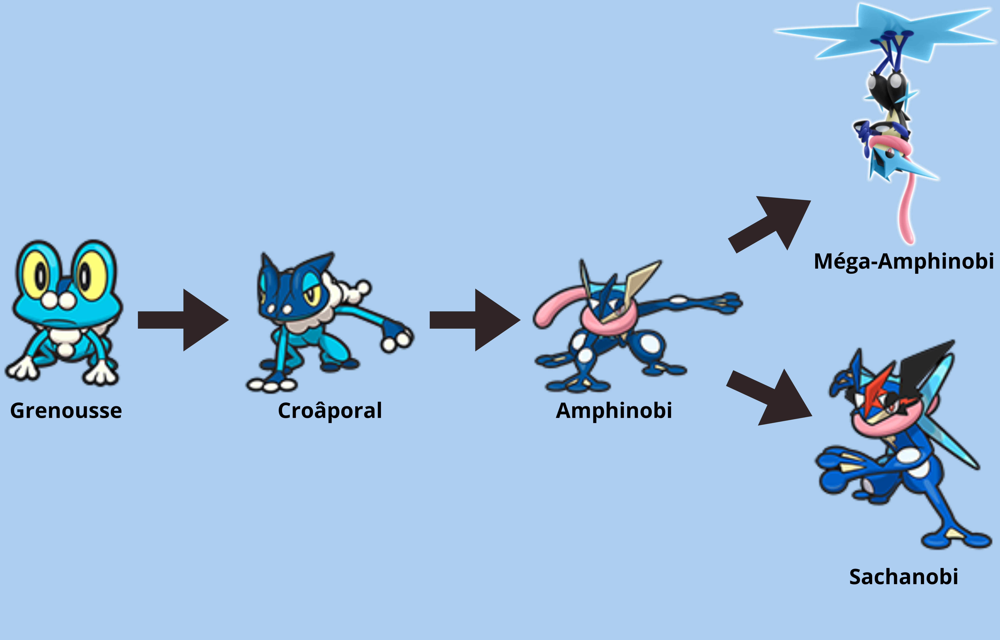

Informations:
Numéro du Pokedex national: 658
Génération: 6ème
Type: 

Cri:

Description :
Amphinobi se déplace avec la vitesse et la grâce d'un ninja. Il utilise des mouvements agiles pour rendre ses ennemis confus pendant qu'il les attaque avec des shurikens composés d'eau comprimée, assez aiguisés pour découper du métal. Grâce à un lien exceptionnel avec son Dresseur, Amphinobi peut atteindre une forme rare où sa vitesse et sa puissance augmentent drastiquement, au point que ses attaques deviennent presque impossibles à suivre à l’œil nu.
- Épisode 930
